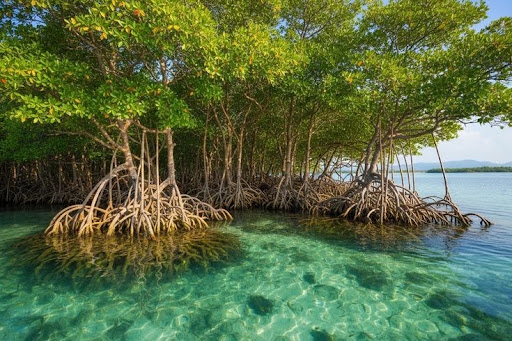

Destinasi & Potensi Wisata
Destinasi menarik yang wajib Anda kunjungi saat berada di Desa Lapeo

Masjid Nuruttaubah KH. Muhammad Thahir Imam Lapeo
Pusat ziarah dan wisata religi Sulawesi Barat yang ikonik, didirikan oleh ulama besar penyebar Islam di tanah Mandar, KH. Muhammad Thahir.
Lihat di Peta Interaktif
Pantai Babatoa
Nikmati pesona keindahan pesisir pantai dengan hamparan pasir, deburan ombak Selat Makassar yang syahdu, serta pemandangan matahari terbenam.
Lihat di Peta Interaktif
Pojok Mangrove
Kawasan konservasi ekosistem pesisir dengan keanekaragaman vegetasi Rhizophora yang kaya akan manfaat ekologis serta ekonomis.
Pelajari Selengkapnya
Fakta Unik & Khazanah Budaya Lapeo
Ketahui asal-usul nama Lapeo yang bermakna "tertiup angin laut" hingga kemegahan adat lokal Sayyang Pattu'du (kuda menari) yang menawan.
Cari Tahu Fakta Unik